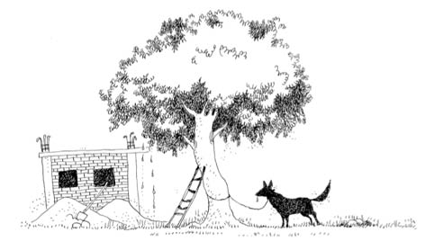

YENİ OKULUM VE ERİK AĞACI
Emirsultan’daki yeni evimize günden güne ısınır olmuştum. Birincisi, Çekirge semtine göre oyun konusunda daha şanslıydım. İkincisi, ev yapı olarak daha makuldü; salona ya da herhangi bir odaya ulaşabilmek için bir yere sürtünmem gerekmiyordu ve de balkonundan ne zaman istersem aşağıdan geçen çocukların tepesine bir şeyler atabiliyordum. Balkon demirlerine geçirilmiş branda sayesinde istersem kimseye görünmüyordum. İstersem diyorum, bazen gözümün kestiği ufak tefek bir çocuksa geçen, saklanmama da gerek kalmıyordu, çocuk yukarı baktığında “Olur böyle şeyler” rahatlığıyla bakabiliyordum.
Günler, okul ve ev arasında geçer olmuştu. Bu okulu sevme sebeplerimden biri, sınıfta oturduğum yerden tahtayı görebiliyordum. Ayrıca okul ve ev arası yürüyerek beş dakikaydı. Üstelik adımlarım geri geri giderken beş dakikayı geçmiyordu, varın siz hesaplayın. Bir de tabii Buket! Birinci sınıftayken de Göksel’im vardı. İlk kitaptan hatırlayacaksınız; akça pakça, oyuna koşturmaya gelen, o an yediği her neyse elinden almadığın sürece maraza çıkarmayan, sağı solu tutulur güzellikte bir kızdı. Civanımın “Aşkım” deyip de göz süzüp, iç geçirdiği kara kuru çalışkan kızlardan değildi.
Buket, hem eli kolu düzgün, hem de yüzünü görür görmez sevebileceğiniz güzellikte bir kızdı. Dışarıdan bakan birinin kesin çalışkan titiz biridir demeyeceği kadar da kendine dikkat ederdi. Kısa sürede beni mest etti.
Aklım fikrim onda. Şerif’le okulları istemeden de olsa ayırmış bulunduğumuzdan gösterme şansım yok; “Şöyle iyi, böyle güzel, üstelik koşmaca türünden her oyunda da ayağına çabuk biri, biraz çalışkan ama inşallah zamanla düzelir” diye Şerif’e anlatabilmek için içim gidiyor. Gerçekten de Buket oyun sırasında bir koşardı, yakalayana aşk olsun.
İlkokulda zaman zaman evden çıkmadan önce saçımı taramışlığım varsa Buket yüzündendir. O kadar hayranım ki.
Gene bir öğleden sonra okuldayız. Bayrak töreni için ikişerden sıralanıyoruz. Çantayı kapıp Buket’in çantasının arkasına koyacakken Fuat diye bir oğlan benden önce çantasını bıraktı. “Burası benimdi” dedim. Önce yüzüme, sonra da arkamızdaki geniş boşluğa baktı. Konuyu bilse belki uzatmaz ama haberi yok oğlanın. “Deli misin, nesin!” dercesine yüzüme bakmayacak kadar da küçük, yalnızca şaşkın bakıyor. Ben de “Tövbe tövbe, estağfurullah!” diyemeyecek kadar Fuat’la yaşıtım. Neyse, çantasını alıp biraz daha kenara koyup kendi çantamı Buket’in çantasının arkasına bıraktım. Oğlan ensesini kaşıdı, yakasını düzeltti, önce bana, sonra da çantama baktı, yakasını bir daha düzeltti, “Bilmiyordum” dedi. Aslında Buket’in hayrına yer krizi çıkardığımı bilse belki de çantayı kıpırdatmayacak inadına. Öğlenciyiz ya, güneş tepemizde, kimsede bir gram fazladan akıl yürütecek kafa kalmıyor. Bayrak töreninde her zamanki yerimde, Buket’in tam arkasındayım. “Memleketi kurtardık, meclis açılıyor, ben de gereken yerdeyim” edasındayım.
Gene böyle duygusal bir hâlimde eve geldiğimde annem elimden çantamı alırken, “Yarın Gülten Teyzenlere gidiyoruz” dedi. Onun da sohbet arkadaşı o, dervişin fikriyle zikri hâli. Yav siz deyin beş, ben yazayım on, Aytül bir şey demeden baksın, belki on beş dakika sevindirik oldum.
Babam okuldan gelince bir de ona doğrulatmak lazım. Adam daha soyunup dökünmeden sorguya çekildi. Babam, “He!” dedi, “Erdoğan’ımla konuştuk, ‘Baharda Çekirge tarafları çok güzel olur, gelin’ dedi.”
Emirsultan’a geldiğimizde yarıyıl tatili yaklaşmıştı. Günler geçmiş, ben 3. sınıfın ilk karnesini almışım, yarıyıl tatili bitmiş, hatta mayıs ayı kapımızda kol geziyor, haftalar sonra Şeriflere gitme işi haberini alıyorum. İkinci taşınma işi belimizi nasıl büküp, nasıl meşgul ettiyse bizi, ancak kendimize geliyorduk. Gerçi bir iki saatliğine Emirsultan’daki evimizi görüp yeri bellemek için şöyle bir uğramışlardı ama daha civanımla oyuna ısınamadan gitmişlerdi.
Babam çoluk çocuğa olur olmaz tembihlemede bulunmazdı. Oldum olası yaşımıza uygun hergelelikleri yapmaktan bir gün bile çekinmedim. Futbolu çok iyi oynayan ve çocukları da etrafına toplamaktan büyük mutluluk duyan, çok hoşgörülü biridir. Erdoğan Amcam da aynı hoşgörüyü taşımakla beraber, oyun konusunda, özellikle de sapan ve yay konusunda hassastı. Okların ucuna gazoz kapağını eğip metal uç yapardı. Okun ucu ağır çektiğinden fırlattığınız yere giderdi ve denk getirebilirseniz istediğinizi kör etme şansınız vardı. Gerçi kör etme konusu bir an aklına gelse, yay ve oka tövbe edecek adamdır Erdoğan Amcam. Tüm bu oyun konuları ve harala gürele işlerine yatkın olan Erdoğan Amcamın babamdan tek ayrıldığı nokta, bahçeleri talan etme işleriydi. El âlemin ağaçlarının yağmalanması işlerine hiç sıcak bakmazdı. Babamsa, zaten meyvelerin bir kısmı ağacın altına dökülüyor, kurtlar kuşlar yiyeceğine çoluk çocuk yesin, büyüyüp adam olurlarsa zaten meyve sebze çalmazlar diye düşünenler cephesindendi. Yalnız, bu konuda hassas olan Erdoğan Amcam, o zamanlar Bursa’nın en meyvelik yerinde ev tutmuştu. İnadına yapar gibi. O ağaçları görüp de dalmayacak çocuk varsa da zamanında evliya olmuştur. Şerif’im de onca tembihe, nasihate rağmen bu talana eli en yatkın yiğitlerdendi.
Günlerden cumartesi, kahvaltı sofrasındayız. Sofrada babam, “Aman oğlum, gene el âlemin bahçesine girip de elma, armut koparmayın. Biri bir şey söyler, mahcup oluruz” dedi. Sözün esas manası: “Erdoğan Amcanı üzmeyin!” Gerçekten de Erdoğan Amcamın bağırıp çağırmadan bakışlarıyla bir üzülmesi vardı, “Yav, Allah benim cezamı verse de yer yarılsa içine girsem, hatta orada da yüzüme tükürseler, ben silemesem” diye hissederdiniz. Varın anlayın Erdoğan Amcamın bakışlarındaki hissi derinliği.
Aklımın yarısı Buket’te, yarısı civanımda. Gözlerim kaymış gitmiş, “Mendel’in bezelyeleri olsa gözüm görmez, hiç dinlemem, meyveye sebzeye dalarım” diyemeyecek kadar da yaşım küçük.
Çekirge Askerî Hastanesi’ne yakın bir yerde otobüsten indik. Nacar ailesi olarak tek kol nizamında kaldırıma yakın ilerliyoruz. Yokuştan Doburca tarafına doğru indik, daha bismillah, kaybolamadan sokağın başında Erdoğan Amcayla Şerif’im -civanım- bizi bekliyorlar. Erdoğan Amcamın muzip gülüşüyle, “Ali’m, allasen söyle, geçen sefer hangi sokağa girip bir saat dolaştınız?” dedi. Babam olgun adamdır, kaybolma dosyamız kabarık olduğundan ses etmedi, “Yav Erdoğan’ım, sokaklar birbirine benziyor” falan deyip geçiştirdi. Kıh kıhlar, keh kehler birbirine karıştı.
Niyetim, tez elden Buket konusunu dilimden çıkarmak. Artık dilim şişmiş, susmak olur mu! Şerif’im beni dinlerken, çalışkanlık konusunda mest oldu. “Yav, bacısı yok mu ki?” manasında bir bakış gelip gözlerine oturdu. Bilirim; okulun ne kadar cılız, kuru kızı varsa sırf çalışkanlığından civanımın gönlünde ayrı bir yere sahiptirler. Buket, hem çalışkan hem de çok güzeldi, öyle böyle değil. Bir de benim sevdamla anlatıldığını düşünün, varın gerisini siz hesaplayın. Neyse, on beş dakika hasretin, lafın belini kırdık sokak ortasında.
Bir ağacın altına tüneyip nefeslenirken mahalleden bir çocuk civanımı görüp yanaştı. “Geçen gün anlattığın eriğe dalacak mısınız?” diye sordu. “Daha olmamışlar” dedi Şerif’im. Çocuk savuşup gitti yanımızdan.
“Hayırdır?” dedim. “Abi, bir erik var, inanamazsın” dedi Şerif. Şaşkınlığımdan ağzımın suyu bile akamadan, “Ne zaman olur erikler?” dedim. “Oldular bile, geçen baktım ben” dedi. Anladım ki yiğidim mahalleliyi başına toplamak istemiyor.
Usulca ağacın altından kalkıp yürümeye başladık. İki eli pantolonunun ceplerinde, çıkacak Samsun arayan bakışlarla civanım etrafına bakıyor. Belli ki usulden etrafı kolaçan ediyor peşimize takılan olur mu diye. Sessizce askerî hastanenin yanındaki yokuştan mezarlıkların olduğu yere doğru inmeye başladık. Etraf, yeni yapılan apartman ve ufak tefek meyve bahçeleriyle dolu. Elmaydı, armuttu bakmadı bile, aklında erik ağacı. Kabası bitmiş bir inşaatı çevreleyen tahta perdeleri kolaçan etti. Birinin aralığından içeri geçti, mecburen ben de. Bahçeye girer girmez koskocaman erik ağacı, boylu boyunca tüm haşmetiyle dikiliyordu karşımızda.
Kurban olduğum, aynı cesamettekileri neredeyse Ankara armudu, dut ağacı diye yaratıyor ki, breh breh... Ağaç kavun verse dalı taşımaz. Alttan üçüncü daldan düşen çocuğu anası gelse anca nüfus kâğıdından tanır; öyle heybetli bir ağaç! “Bu kadar mı olur Şerif’im!” manasında ağaca bakakaldım. Yiğidim de, fidanını kendi elleriyle dikmiş kadar gurur dolu bakışlarla hafif mahcup dudaklarını büzdü. Huşu içinde bir süre ağaca baktıktan sonra Şerif’ime dönüp, “Abi, geçen sefer nasıl tırmanmıştın bu ağaca ayıptır sorması?” manasına gelebilecek cümleler kurdum. En alttaki dalı, bizim bir metre yukarımızdan geçiyor. Doğrudan sorulmaz. Hem ev sahibi hem de civanımın heybeti konusunda bir tatsızlık yaratmak âdetim değil.
İşaret parmağıyla kulağını kurcaladı. Ağaç üç günde bu hâle geldiyse bilemem de, belli ki civanım da yol boyunca bunu düşünmüştü. Babam gelse zor çıkar! “Tevekkeli, erikler ceviz kadar olmuş kimse elleyemediğinden” deyip de moralimizi bozmak, gazı vermişken cibilliyetimize yakışmayacağından etrafı kolaçan ettik.
Kireç kovalarının yanında yarıya kadar suyla dolu variller vardı. Yan yatmış eğreti bir tahta merdiveni kanat takıp koç niyetine o an indirseler, kimsenin ne işi var burada demeyeceği kadar ilahi bir an, görünce gözlerim doldu. Merdiveni sırtlayıp devasa eriğin gövdesine dayadık. Tırmanıp sağlamından birer dala tünememiz birkaç dakikamızı aldı. Vay vay hem iri hem tatlı, sulu mu sulu, bu kadar mı olurmuş! Şerif’im ağacı daha önce görüp de tırmanamamış olmanın verdiği hasretle âdeta tırtıl olup dallarda geziyordu.
Yarım saat kadar hem yedik hem de mahalledeki çocukların bu ağacı bilmelerine gerek olmadığı konusunda görüş birliğine vardık. Demek karnımız doydukça zihnimiz de açılıyordu. Hafiften doyar gibi olunca, “Eve de götürecek miyiz?” dedim. Erik ne kadar sulu, iri olsa da Erdoğan Amca’nın anlayacağı, takdir edeceği bir mevzu değil. “Bakarız” dedi yiğidim. Belli, nereden baksanız yarım kilo daha yiyebilecek yeri var. Yoksa bu konuda çok hassastır; çalıp çırpma sonrası meyvenin nakli ve eve getirilmesi konusu çok netamelidir.
Hapır hüpür, şapır şupur derken tahta perdeler aralandı, birkaç inşaat ustası, kalantor görünümde hafif göbekli, gözlüklü bir amca ve tasmasını tuttuğu kurt köpeği in-şaata doğru geldiler. Ağacın yanından geçip inşaata göz attılar. Şu kadar un, bu kadar demir çimento, kömür, başladılar konuşmaya. Ustalardan biri, “İsterseniz in-
şaatı gezelim” dedi. “Olur” dedi adam. “Şu köpeği ağaca bağlayayım, gideriz” diye de devam etti. Ağaç da bizim ağaç.
Neredeyse adamın beline gelen kocaman bir köpek, dili dışarıda, kulakları dik. Ağacın gövdesine bağladılar. Aynen şimdi olduğu gibi o anda böyle bir sessizlik olduydu; çıt çıkmadı bir süre. Ağzımda gevelediğim eriği yutamadığımı fark ederek anlaşılır olmaya çalıştım, “Geçen sefer eriği gördüğünde bu yok muydu etrafta abi?” dedim. “Olsa ne fark eder?” manasında olmasa da boş boş etrafa baktı yiğidim. Boynunu hafif büktü, “Giderler inşallah birazdan” dedi. Erdoğan Amcamın Allah korkusunun civanımdan inanç olarak fışkırdığı anlardandır. “İnşallah”ı duyunca ben de camideki topluluğun anında “Âmin” demesi gibi, “Hadi inşallah” dedim. İşin dua kısmını halletmiştik!
Biz yukarıda inşallah çekiyoruz, köpek çevreden duyduğu havlamalara kızıp öyle bir havlıyor ki, gören, ağaç onun da bizi erik çalarken yakalamış sanır. Yani kazayla aşağı düşsek, diğeri hemen atlar arkadaşını kurtarır ama olur ya biraz kararsız kalırsa diye yazıyorum, köpekten geriye ayakkabılarımızın kalacağı şüpheli. Hayvan öyle cevval bir şey.
“Günahı boynuna, biraz önce yalan söylediğimiz çocuğun bedduası mı tuttu acep!” diye düşünsek de belli etmiyoruz. Yalnız bir şey çok belli; artık erik falan yemiyoruz ve daha önce tuttuğumuz dala da sarılmış durumdayız. Allah’tan ağaç devasa irilikte, sık dallı, yoksa çoktan ipliğimiz pazara çıkardı. Ya da Erdoğan Amcam duymasın, sanki ilahi bir güç bu talan işinde bizi koruyordu. Şerif’im birkaç dua ezbere bilirdi. Bir ara dudakları kıpır kıpırdı. “Abi, bilsen sen de ederdin” bakışlarıyla bana baktı. Ben de, “İlk işim birkaç tane ezberlemek” manasında sustum.
Bugün bile hatırlarım; köpek arka ayaklarının üstünde ağacın gövdesine doğru yükselip yükselip bize bakıyordu arada sırada. Sanırım çocuk olduğumuzu fark edip işi büyütmedi. Aynı şeyi babamla Erdoğan Amca yapmış olsa, demek ortalığı yıkacaktı. Belki de onun için Erdoğan Amcam, “Bu işlerden uzak duralım”; babam da, “Çocukların göz hakkı Erdoğan’ım” manasında sessiz bir mutabakat içinde gülümseyen gözlerle bize bakıp durdular yıllar boyunca. Kim bilir...
Sonra ne mi oldu? Şerif’im köpek hasretiyle büyüdüğünden, usulca ağaçtan indi, bir urganı köpeğin boynuna doladığı gibi sürüye sürüye eve doğru götürmeye başladı. Tamam yemediniz, anladık! Köpek ve sahibi çekip gidene kadar efendi gibi ağaçta tüneyip saatlerce gıkımızı çıkarmadık.
“Yav, bu çocukların ömrü de talanda geçmiş” diyenlere cevabımdır: Henüz bitmedi, daha diyecek lafımız var elbet dinleyene...